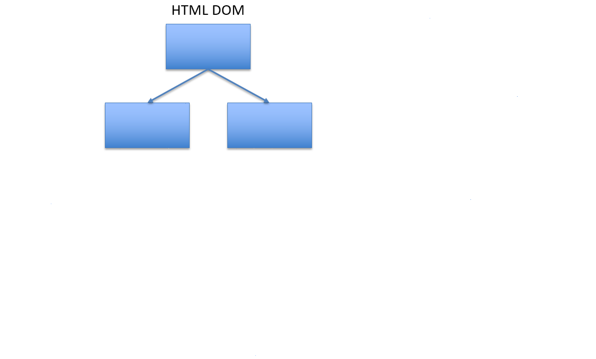
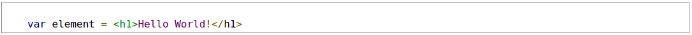
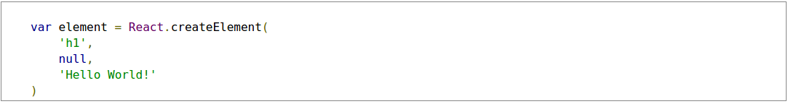
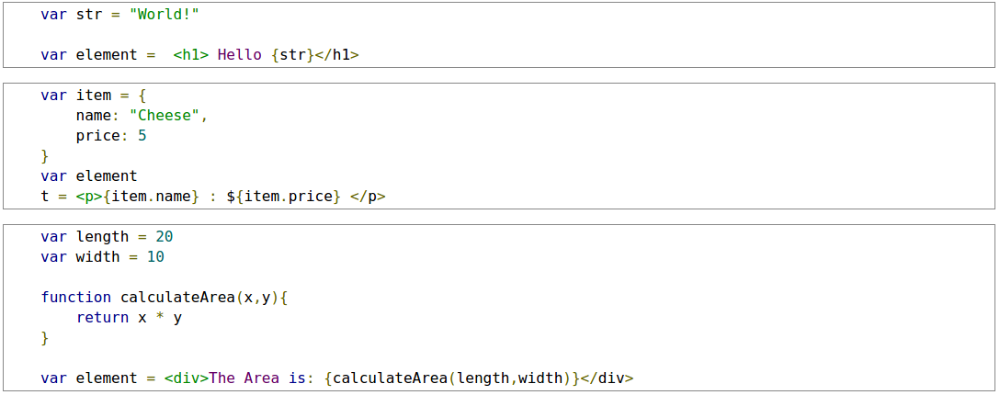
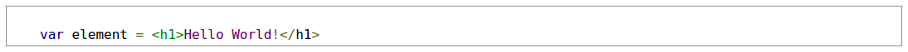
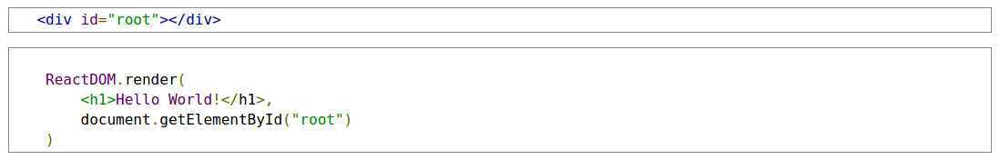

ReactJS
November 25 2017
Why ReactJS?
React (sometimes styled React.js or ReactJS) is a JavaScript library for building user interfaces. It is maintained by Facebook, Instagram and a community of individual developers and corporations. ReactJS is a library that generates the view layer of an application based on its state. ReactJS applications are built from React Components - independent resusable components that describe how the UI should look based on their own state and properties.
- ReactJS applications are incredibly performant at UI rerendering
- React Components make writing UI components easier
What makes ReactJS so efficient at rerendering?
TReact Components are used to generate a Virtual DOM - a light-weight abstraction of the actual HTML DOM. The Virtual DOM is able to be generated much more quickly than the HTML DOM because it does not have to calculate CSS styles and layouts. When a React Component changes state, the Virtual DOM is recreated and the difference between the new Virtual DOM and the previous Virtual DOM is calculated. The ReactJS library then calculates the most efficient way to update the HTML DOM to reflect these changes. This ends up being much faster than regenerating the entire HTML DOM from the top.
Declarative
React makes it painless to create interactive UIs. Design simple views for each state in your application, and React will efficiently update and render just the right components when your data changes. Declarative views make your code more predictable and easier to debug.
Component-Based
Build encapsulated components that manage their own state, then compose them to make complex UIs. Since component logic is written in JavaScript instead of templates, you can easily pass rich data through your app and keep state out of the DOM.
Learn Once, Write Anywhere
We don’t make assumptions about the rest of your technology stack, so you can develop new features in React without rewriting existing code. React can also render on the server using Node and power mobile apps using React Native.
A Simple Component
React components implement a render() method that takes input data and returns what to display. This example uses an XML-like syntax called JSX. Input data that is passed into the component can be accessed by render() via this.props.
A Stateful Component
In addition to taking input data (accessed via this.props), a component can maintain internal state data (accessed via this.state). When a component’s state data changes, the rendered markup will be updated by re-invoking render().
A Component Using External Plugins
React is flexible and provides hooks that allow you to interface with other libraries and frameworks.
JSX
What is JSX?
JSX is a syntax extension to JavaScript that allows React Elements to be written inside JavaScript using HTML tags.
JSX is a statically-typed, object-oriented programming language designed to run on modern web browsers. Being developed at DeNA as a research project.
- Faster
- Safer
- Easier
JSX performs optimization while compiling the source code to JavaScript. The generated code runs faster than an equivalent code written directly in JavaScript.
In contrast to JavaScript, JSX is statically-typed and mostly type-safe. The quality of applications becomes higher when being developed using JSX, since many errors will be caught during the compilation process. It also offers debugging features at the compiler level as well.
JSX offers a solid class system much like Java, freeing the developers from working with the too-primitive prototype-based inheritance system provided by JavaScript. Expressions and statements, however, are mostly equal to JavaScript, so it is easy for JavaScript programmers to start using JSX.
Using JSX, we can create React Elements easily with HTML Tags:
Without JSX, the process is much slower and more verbose:
Using JSX with JavaScript Expressions
Curly braces can be used to embed JavaScript expressions into JSX.
The following are all examples of valid JavaScript expressions in JSX:
Rendering Elements
React Elements
React Elements are objects that represent a DOM node. They are written using a syntax extension named JSX which we will cover later in this module. React Elements are different than React Components, which we will also cover later in this module.
React Elements need to be rendered by the ReactDOM.render() method to appear in the DOM.
ReactDOM.render()s
The ReactDOM.render() method is used to render a React Element into a specified part of the HTML DOM. In most React applications, there is usually a single root node where everything gets rendered into, but you may use as many root nodes as you desire. In this case, the
Hello World!
React Element is rendered into the DOM element with the id of "root".
Rerendering the DOM using additional render() calls
- Once a DOM is rendered, it will remain the same until another render() method is called.
- The following example uses additional render() calls to update the displayed number:
Functional Components
React Components
A React Component is an independent reusable component that outputs a React Element based on its properties and state.
There are two types of React Components:
- Functional Components
- Class Components
Class Components have state, lifecycle methods, and properties while Functional Components only have properties. In this module, we will cover Functional Components while Class Components will be covered in Module 2.